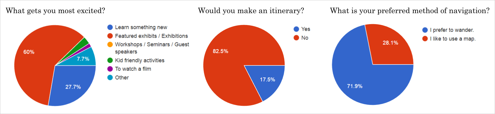
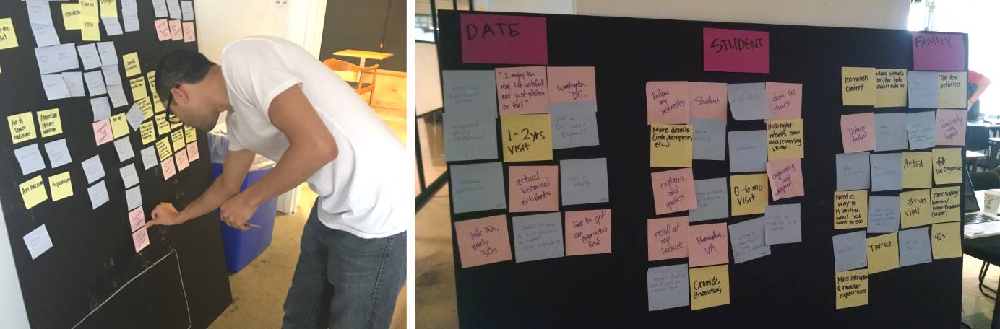
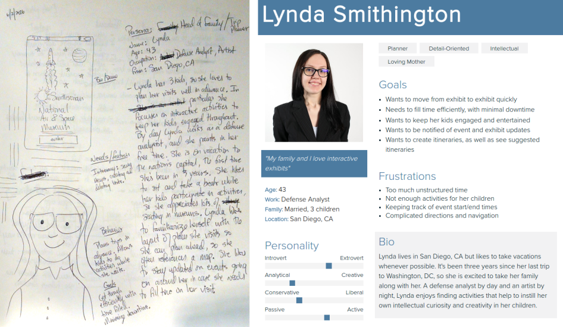
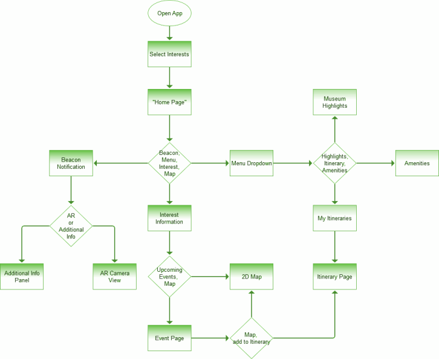
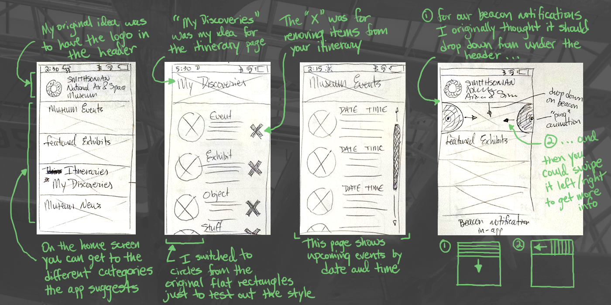
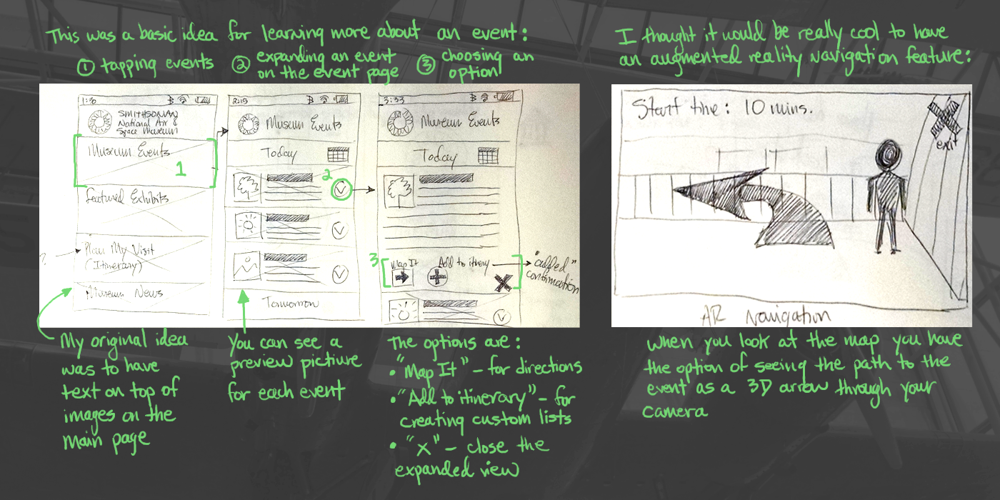
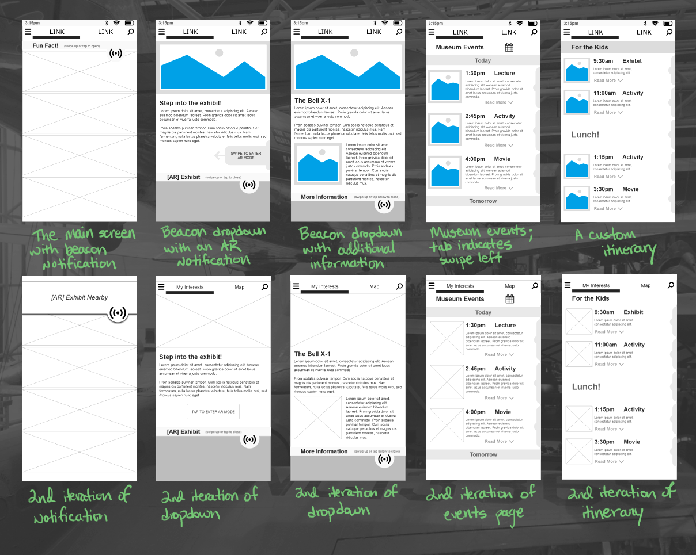
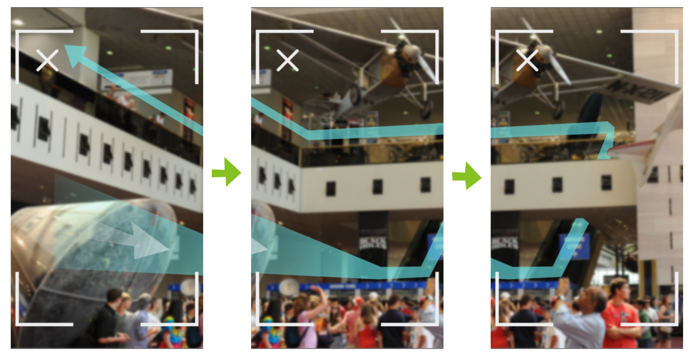
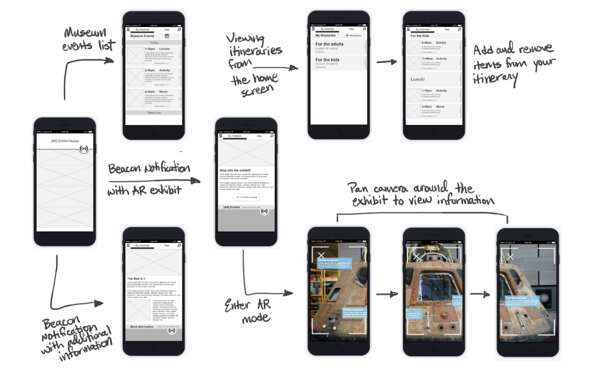

The Project
Overview
The Smithsonian National Air and Space Museum wanted a mobile app to help improve visitor experience. Requested features included: help visitors efficiently navigate through the museum, help visitors discover the exhibits that are most interesting to them, to give visitors additional information, and to allow visitors to keep track of what they see over the course of their visit.
The Team
The project team consisted of myself, and two other UX designers, Audrey and Tory. I will talk about their work when appropriate, but the primary focus of this case study is my own contribution to the project. We decided to divide up the aspects of the project fairly evenly amongst ourselves, so that we would each be able to contribute to each stage of the design.
My Role
I was responsible for: Competitive Analysis, Interviews, Survey Questions, Ideation & Sketching, Wireframes, Usability Testing, and Prototyping.
Research
Competitive Analysis
One of the main points of frustration for museum visitors was finding their way through the museum. In order to address this, I took a look at a number of mobile apps designed to aid in navigation. Tory and Audrey took a look at a number of existing museum apps to get an overview of their layouts and feature sets, for inspiration.

Interviews
I interviewed three people during this process. My team quickly realized that this was not the most effective means of collecting a large amount of information, but what we gained was useful.
Things that got people excited:
I like reading the captions and the quotes on the walls, or any additional information. I also like interactivity." - Rachel
"I like the air and space museum mostly because of the actual platforms, the actual planes. I can see the real-life historical thing rather than just an exhibit with photos or text or a model." - Mike
"[There] has to be about a topic I'm really interested in." - Sebastian
How people like to explore:
"I want to do it on my own - I want to be able to stop and read at my leisure." - Rachel
"If I've been there before I'll remember [and go to] specific things. For changing exhibits I generally just ramble around. If I get lost or I get bored I'll look at a map." - Mike
"I would first like to get an overview, see the museum set up. I rather like to explore the museum by myself." - Sebastian
Sources of frustration:
"Tourists, crowds. Also using the maps - I find it kind of difficult." - Rachel
"The ones I've been to have been pretty good. There's not a lot of frustrations depending, on the day." - Mike
"If you have to drop off your backpack, or deal with security restrictions. Or if you have to empty your water bottle or something like that." - Sebastian
Surveys
To capture more information, we utilized a survey. We designed the survey to gauge a potential visitor's feelings towards certain features of the app that we wanted to include in the design.
We also used survey responses to gauge which features of the app to prioritize. Because people like featured exhibits, as well as wandering on the their own, we realized that beacon technology would work well with our design, for example.
Affinity Mapping
Based on our interviews and survey results, we began to group together certain characteristics. Keeping potential personas in mind, we categorized these characteristics into three groups: a young person on a date, a student interested in the museum for personal reasons, and a mother planning a family vacation.
Persona Creation
I was responsible for the third persona, Lynda, the mother planning her family's vacation to the National Air & Space Museum. Lynda likes to create itineraries in advance, as well as fill unexpected free time quickly.
Focusing on Lynda as our main persona allowed us to focus our design on two key features of the app: itinerary creation, and beacon notifications.
User Flow
Keeping her needed features in mind, I created Lyda's user flow, representing what she might do during any given interaction with the app. I focused on three areas in particular: the ability to see featured exhibits, events, and news via beacon notifications, the ability to create and view itineraries, and the ability to look at a map of the museum.
Ideation
Initial Sketches
After researching, the team and I began to sketch ideas. I thought it would be interesting to incorporate an augmented reality feature into the app, which could potentially solve two of Lynda's needs: keeping both herself and her kids engaged by giving them interactive activities, and also aiding in navigating the museum. Beacon technology would notify Lyda of exhibits and events as she walks by them, giving her the option to participate.
My original idea to include the Smithsonian logo in the header of the app home page was decided against, which you can see in the wireframing stage of design. We decided that it took up an unesscessary amount of screen real estate, and from the perspective of our users, it might be distracting to have a large section taken up by something purely aesthetic.
Prototyping & Testing
Wireframes
Once our sketching and feature ideation was complete, and we had consolidated our ideas, we began to build out higher fidelity wireframes of our app screens. Each member of the team took on a different app function, and mine included beacon notifcations, the events page, and itinerary pages.
Prototyping the augmented reality feature:
You can view my wireflow below. I have elected to show only the screens I designed, although of course our client presentation included both Tory and Audrey's work.
Retrospective
Visuals
Of course, there were things I think could have been done better given the time and resources that we had. The visual aspect of our design is lacking because we chose to demo the project using wireframes. A final visual mockup was not requested, but I do feel like I would have been more satisfied had we taken the time to create something more visually appealing.
Teamwork
There was more talent between us than we were able to effectively demonstrate, due in part to learning how to communicate effectively and come to compromise quickly. In some ways, we came to compromise and agreement too easily, by which I mean there were some good ideas that I had, that each of us had, that could or should have been incorporated had we individually pressed for them more than we did.
Research Methods
The one thing I wish that we had was access to was the Smithsonian's own website. Rather than target museum goers with in-person interviews, or send out surveys ourselves, linking to the survey on the Smithsonian's own website would have given us more direct access to the people we wanted to hear from.
Client Presentation
In retrospect I do think we lacked an overall and cohesive narrative arc that would have made the presentation more compelling. It was less telling the story of Lynda and her family moving through the museum and finding the app useful at different points, for example, than it was simply explaining each step in our design process. I did feel that we could have done better to emotionally engage our audience.